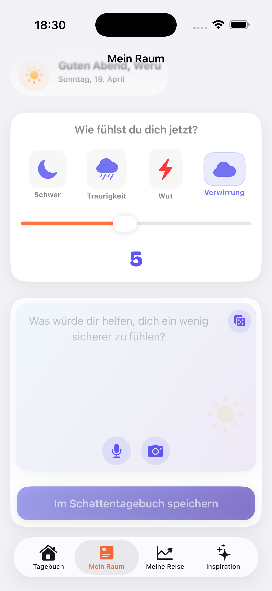
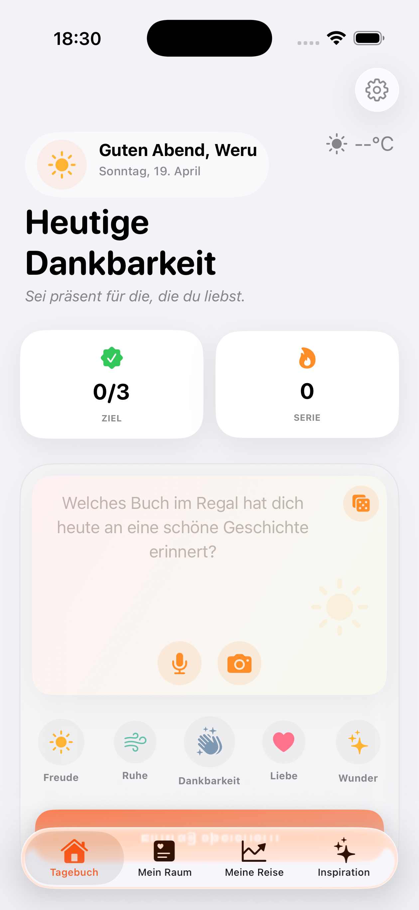
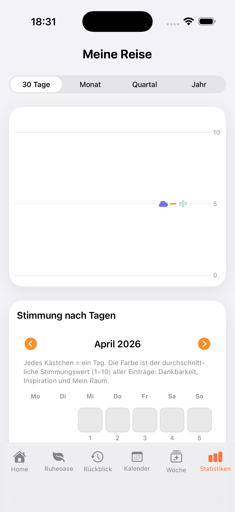

Ich glaube, dass ein digitales Produkt mehr als nur Code sein sollte. Es sollte eine Geschichte erzählen und Emotionen wecken. Meine Reise begann mit einer Leidenschaft für Design und verschmolz allmählich mit der Präzision von Softwaretests und der Effizienz von KI-gesteuerter Programmierung.
Heute helfe ich Unternehmern zu wachsen, indem ich ihre Visionen in greifbare Realität umsetze. Mein Ansatz baut auf Details auf, die den Unterschied machen.
Geprüfte und zuverlässige Projekte ohne Fehler.
Schnellere Lieferung ohne Qualitätsverlust.
Minimalismus inspiriert von Apple-Ästhetik.
Inhalte, die begeistern und verkaufen.
Die Zukunft liegt in der Symbiose von menschlichen Ideen und KI. Als unabhängiger Entwickler liefere ich Ergebnisse, für die eine Agentur ein ganzes Team bräuchte.
Innovation beginnt hier.
Jedes Projekt ist eine Gelegenheit zu zeigen, dass ein kleines Team große Agenturen übertreffen kann.
Experte im Prompt Engineering. Ich nutze KI, um hochwertige Ergebnisse in Rekordzeit zu liefern.
Design in Canva und Figma, das begeistert. Fokus na Minimalismus und Benutzererfahrung.
QA-Erfahrung garantiert stabile und sichere Lösungen, bereit für den echten Einsatz.
Ihre Website wird nicht untergehen. Ich richte technisches SEO und Analysen ein, damit Sie dort sichtbar sind, wo die Leute nach Ihnen suchen.
Entwicklung nativer Apps für das Apple-Ökosystem mit Fokus auf Performance, Sicherheit und sauberen Swift-Code.
Implementierung von GPT-Modellen und modernem Prompt Engineering für intelligentere Funktionen.
Erstellung schneller Webseiten mit HTML5, CSS3 und modernen JavaScript-Frameworks.
Lokale Speicherung auf dem Gerät, optionale Apple-Backups je nach Nutzereinstellung — kein eigener Cloud-Server des Entwicklers für App-Inhalte.
Als unabhängiger Entwickler konzentriere ich mich auf Tools, die das tägliche Leben verbessern. Folgen Sie dieser Seite.